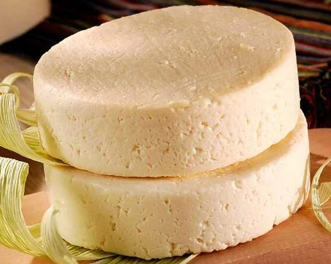
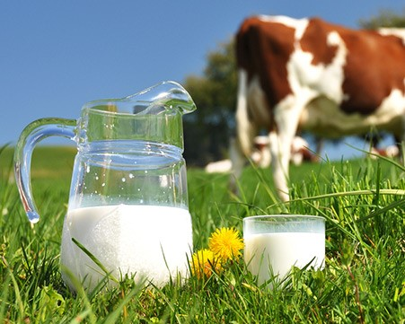
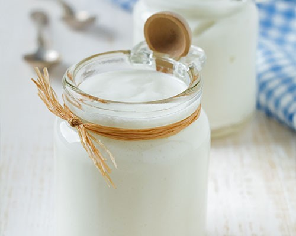

Actividades Económicas
Nuestros Productos
Gracias al esfuerzo y la colaboración de nuestra comunidad, hemos logrado impulsar la producción local de productos lácteos de alta calidad. Ahora, orgullosamente ofrecemos una variedad de quesos artesanales, yogures frescos, leche pura y nuestro exclusivo “Pájaro Azul”. Cada producto refleja el compromiso y la dedicación de nuestros miembros, quienes trabajan incansablemente para brindar lo mejor a nuestras familias y vecinos. ¡Juntos, estamos construyendo un futuro más sostenible y saludable para todos! Puedes apoyarnos con la compra de los mismos, ¡Estaremos muy gustosos de atenderte!


